Pokémon Plus · 逐页布局复核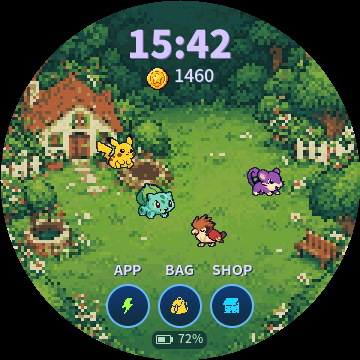
庭院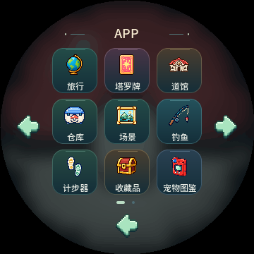
APP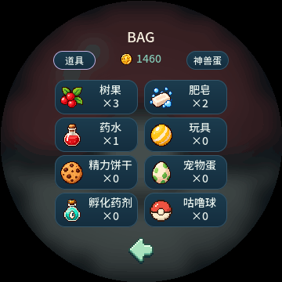
背包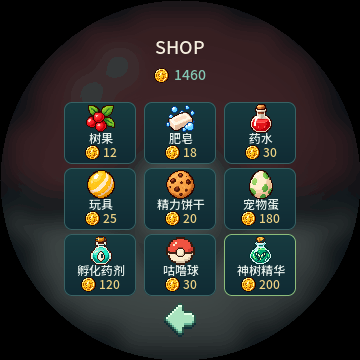
商店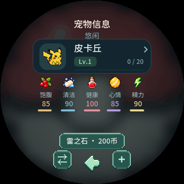
伙伴状态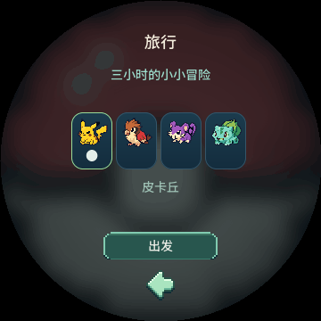
旅行选宠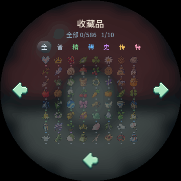
收藏品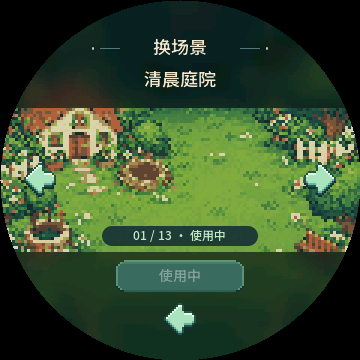
场景选择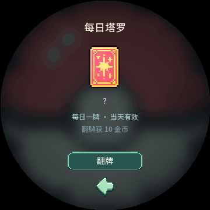
塔罗牌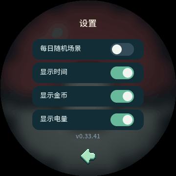
设置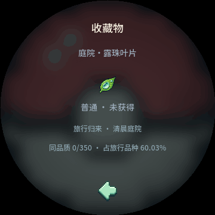
藏品详情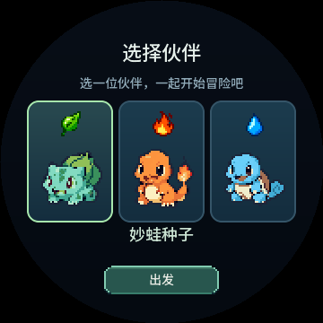
初选伙伴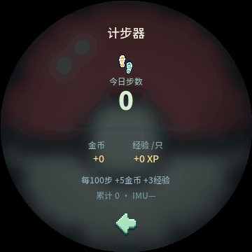
计步器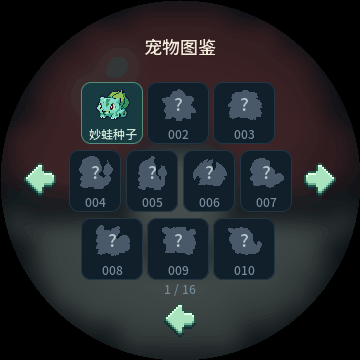
宠物图鉴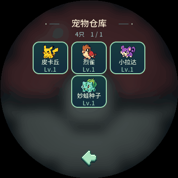
宠物仓库 馆主详情
馆主详情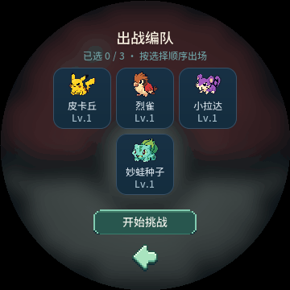
出战编队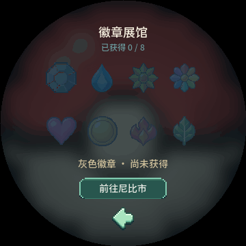
徽章展馆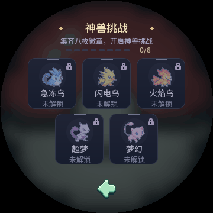
神兽列表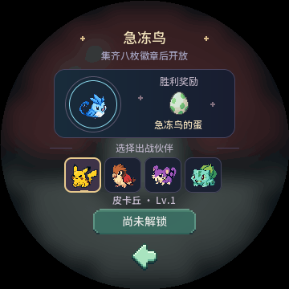
神兽详情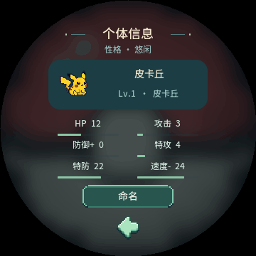
个体值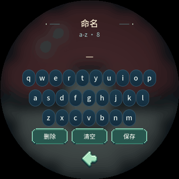
命名键盘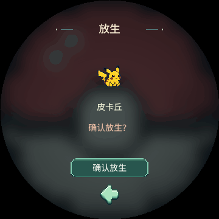
放生确认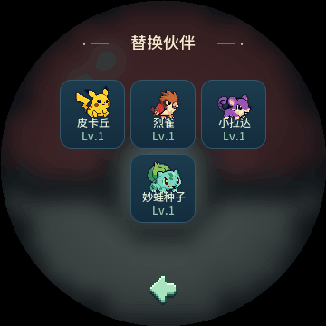
替换伙伴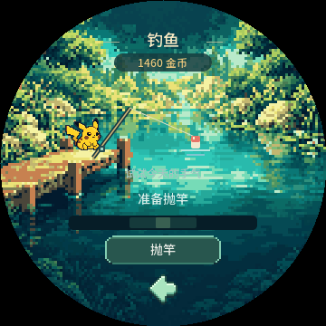
钓鱼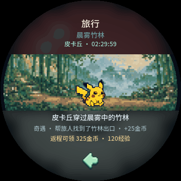
旅途中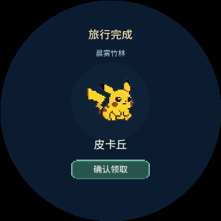
旅行完成待领取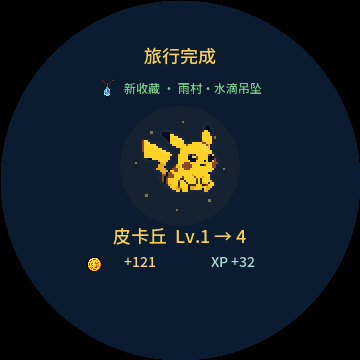
旅行收获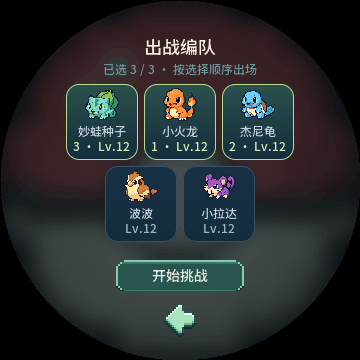
五只伙伴编队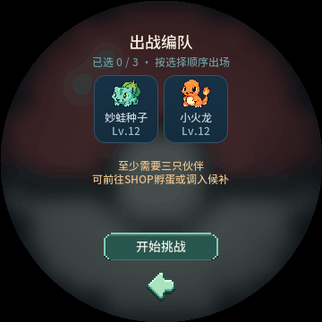
伙伴不足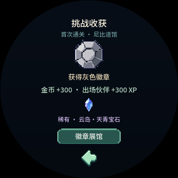
道馆首次获胜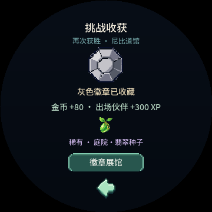
道馆再次获胜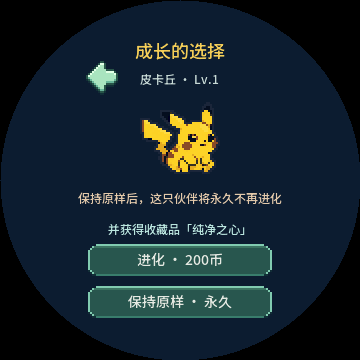
进化选择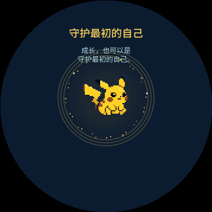
保留形态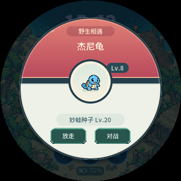
野生相遇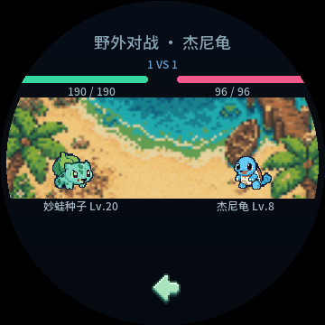
野外战斗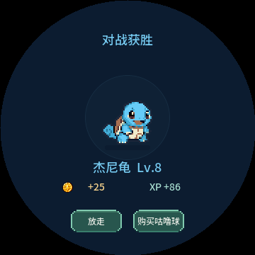
捕捉确认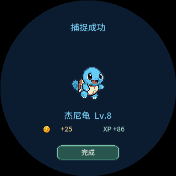
捕捉成功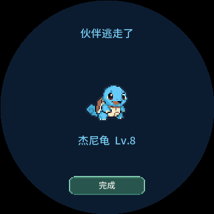
野生伙伴离开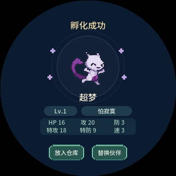
孵化揭晓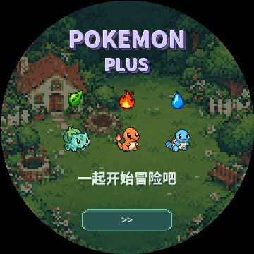
片头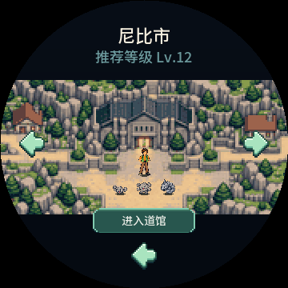
尼比地图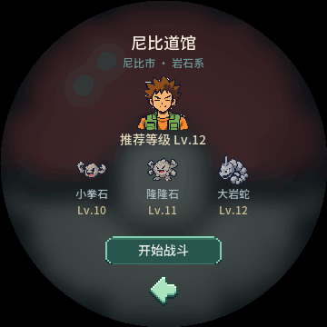
尼比详情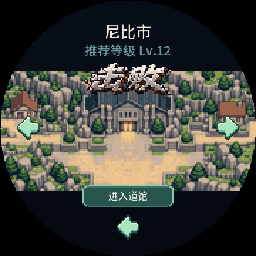
尼比击败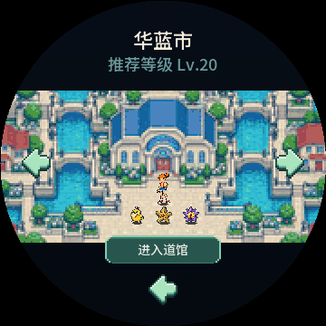
华蓝地图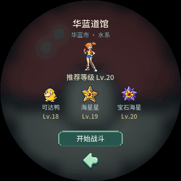
华蓝详情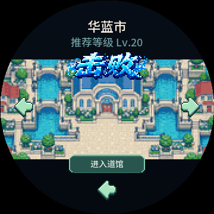
华蓝击败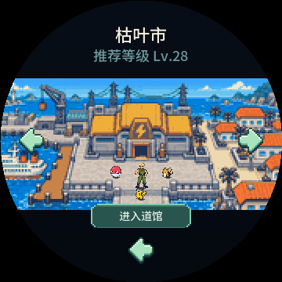
枯叶地图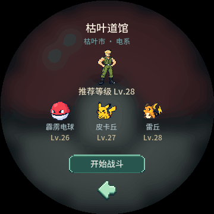
枯叶详情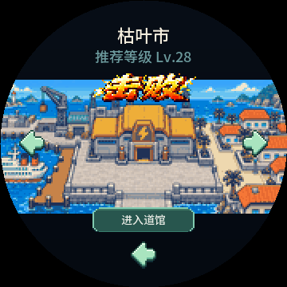
枯叶击败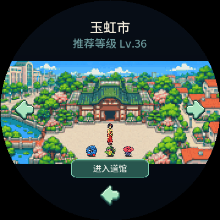
玉虹地图玉虹详情玉虹击败浅红地图浅红详情浅红击败金黄地图金黄详情金黄击败红莲地图红莲详情红莲击败常青地图常青详情常青击败